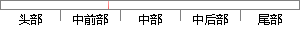

因此，非0均值的问题虽然会产生一定的影响，不过相比上面的第一个问题来说影响较小。
片段位置图

相似结果|
1
原句片段：因此，非0均值的问题虽然会产生一定的影响，不过相比上面的第一个问题来说影响较小。
相似片段 1：因此,非0 均值这个问题虽然会产生一些不 好的影响,不过跟上面提到的 kill ...当然,如果你设置了一个合适的较小的learning rate,这个问 题发生的情况其实也...
相似片段 2：因此,非0均值这个问题虽然会产生一些不好的影响,不过跟上面提到的 kill ...当然,如果你设置了一个合适的较小的learning rate,这个问题发生的情况其实也不会...
相似片段 3：因此,非0均值这个问题虽然会产生一些不好的影响,不过跟上面提到的 kill ...当然,如果你设置了一个合适的较小的learning rate,这个问题发生的情况其实...
相似片段 4：因此,非0均值这个问题虽然会产生一些不好的影响,不过跟上面提到的 kill ...当然,如果你设置了一个合适的较小的learning rate,这个问题发生的情况其实也不...
|
※ 片段修改建议 ※
近似词参考：- 因此：是以 因而
- 问题：题目
- 产生：发生 孕育发生
- 一定：必然 肯定 必定
- 不过：不外 无非
- 相比：比拟
- 问题：题目
- 来说：来讲
系统自动生成语句：是以，非0均值的题目虽然会发生必然的影响，不外比拟上面的第一个题目来讲影响较小。
注：本片段修改建议为系统自动生成，仅供参考。